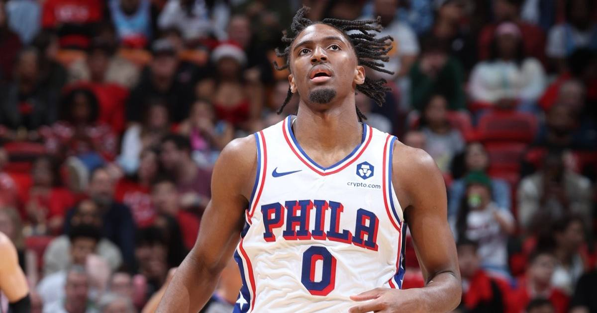

76ers spoil Knicks' ring night 106-100 in LeBron's Philadelphia debut
Tyrese Maxey's 28 points powered a 29-18 third quarter as the 76ers crashed the defending champion Knicks' ring night 106-100 at Madison Square Garden in LeBron James' Philadelphia debut.

Disclosure: this post contains affiliate links. I earn a commission on qualifying purchases.
Maxey crashes the champions' party
The 76ers picked the worst possible night — or the best possible one — to introduce themselves. Philadelphia walked into Madison Square Garden on Tuesday night and spoiled the defending champion Knicks' ring night with a 106-100 win, and the night belonged to the team's two new headliners.
The 29-18 third quarter that ended it
The game turned decisively after halftime. The 76ers outscored the Knicks 29-18 in the third quarter, and the Knicks never recovered. Tyrese Maxey's 28 points powered that run — the burst that put Philadelphia ahead for good and turned the champions' celebration into a stunned home crowd.
Debut watch: LeBron and Brown
The headline going in was LeBron James' Philadelphia debut in year 24 — and per ClutchPoints, the night finally broke LeBron's opening-night streak. He finished with a balanced 14 points, 9 rebounds, and 7 assists — not a takeover night, but a steady one alongside Maxey's explosion.
Jaylen Brown's 76ers debut was the more complete line of the two newcomers:
### Key stat lines
Tyrese Maxey: 28; —; —
Jaylen Brown (debut): 19; 8; 6
LeBron James (debut): 14; 9; 7
A remade contender walked into the champions' house on ring night and walked out 1-0. Statement sent.
Sources: ClutchPoints — "LeBron James finally breaks opening-night streak in year 24"
Watch
Source: 76ERS at KNICKS | FULL GAME HIGHLIGHTS | October 20, 2026 (NBA)
The official NBA highlight package from Philadelphia's 106-100 opening-night win — Maxey's 28-point scoring burst, Jaylen Brown's 76ers debut, LeBron's first game in a Philadelphia uniform, and the Knicks' championship banner going up before the loss.
Gear up: Sports category post → [Fanatics](https://fanatics.93n6tx.net/WOLjqe): via Fanatics